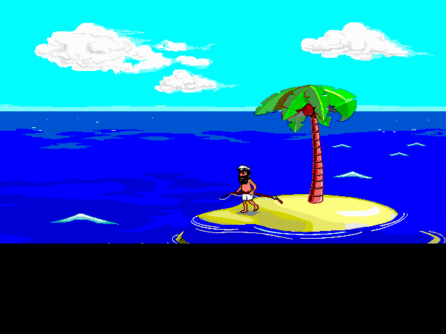
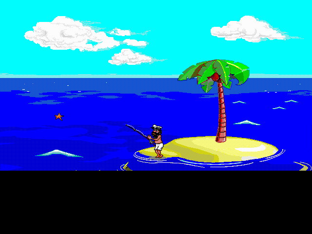
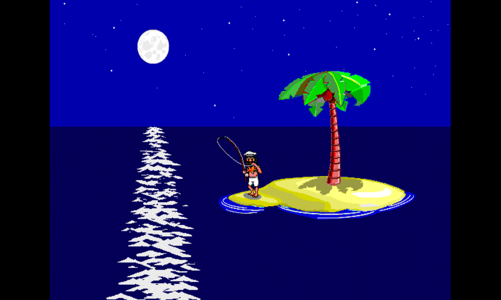

Scene · FISHING 1 validated v0.3.6-ps1
FISHING 1 — Catches a starfish, throws it back

What happens
Johnny walks down to the water with a fishing rod, casts the line, and after a beat reels in a starfish. He looks at it, shrugs, and tosses it back. Then he packs up and walks back inland.
This is the reference scene for the whole pipeline. If FISHING 1 looks right and sounds right across all four variant flags, the host capture pipeline and the PS1 playback engine are working as designed. Every other scene gets validated against this bar.
Reference frames
These are the Sierra original — captured from the host build running the real ADS/TTM bytecode against the original Sierra data files. The host-vs-PS1 frame diff is the project’s whole signoff loop: a scene “clears the bar” when the PS1 frames match these references pixel-for- pixel across every applicable variant.


Validation
Validated as of v0.3.6-ps1. Variants exercised: night, low-tide, holiday, raft-stage.
This scene clears the FISHING 1 bar — pixel-perfect visuals plus synced SFX across every applicable variant.
Pack identifiers
- ADS dispatch:
FISHING.ADS scene 1 - Slug:
fishing1 - High-tide pack:
FG/FISHING1.FG2 - Low-tide pack:
FG/FISH1LOW.FG2
Variants
- night — Dusk/night palette swap (BOOTMODE
night 1). - low-tide — Tide state variant; different shoreline geometry (BOOTMODE
lowtide 1). - holiday — Holiday overlay variants — christmas, halloween, etc. (BOOTMODE
holiday N). - raft-stage — Cumulative raft-build state; raft sprite gains parts as the player progresses (BOOTMODE
raft-stage N).


Caption
This scene has on-screen caption text. Confidence: HIGH in the caption audit.
Johnny goes fishing.
He catches a starfish.
He throws it back.
Notable runtime history
FISHING 1 high-tide is the
canary scene for
the entire headless-perf matrix. Re-measured on every release; its
loop_vb vs target_vb ratio is the load-bearing reference frame
for “did this matrix-wide change just regress the easiest path.”
The latest rollup at v0.9.8-ps1 lands at
1068 / 1072 VBlanks, 0.0% public over target, 100.0% public target
speed, blocking_vb=5 — the raw signed CSV row is -0.4% / 100.4%. That is
what “the FISHING 1 bar” means as a timing claim alongside the visual one.
The perf battle card shows the per-variant rows; the perf retrospective walks through how this scene’s stability paid for the rest of the matrix’s accepted optimizations — the promotion rule requires that the canary doesn’t move backward.